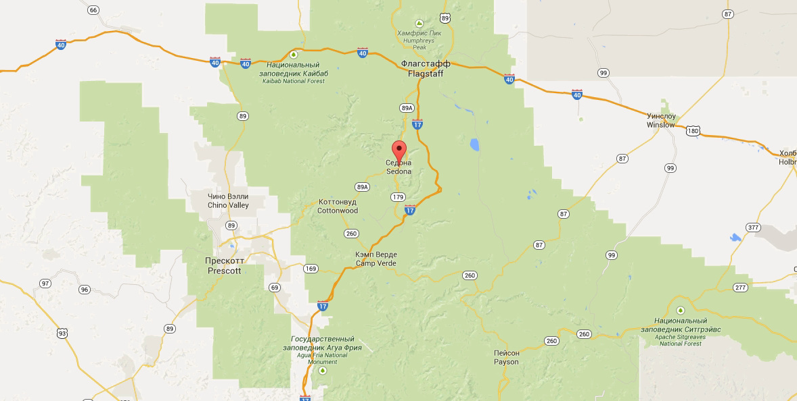

Аренда гостиниц в городе Седона
Добро пожаловать в город Седона!

Седона — небольшой городок в Аризоне,заслуживающий большего!
Рассмотрим 5 причин, по которым Седона круче, чем гранд каньон!
Главная особенность города
Настоящий городок
№1
Седона — не аттракцион для туристов, там течёт своя жизнь

Чем можно заняться в городе
-
Жильё
Рекомендуем пожить в настоящем мотеле, всё как в кино!
-
Еда
Всегда заказывайте фирменный бургер, вы не разочаруетесь!
-
Сувениры
Не только китайского, но и местного производства!
Любителям экстрима

Там есть мост дьявола
№2
Да, по нему можно пройти! Если конечно вы осмелитесь
Преимущества города
-
Небольшая Площадь
№3
все достопримечательности находятся очень близко
-
Красивая дорога
№4
ехать в седону из лас-вегаса совсем не скучно!
-
Мало туристов
№5
большинство едет в гранд каньон и толпится там
Поиск Гостиницы
Заинтересовались?
Укажите предполагаемые даты поездки, и мы покажем вам лучшие предложения гостиниц в седоне
